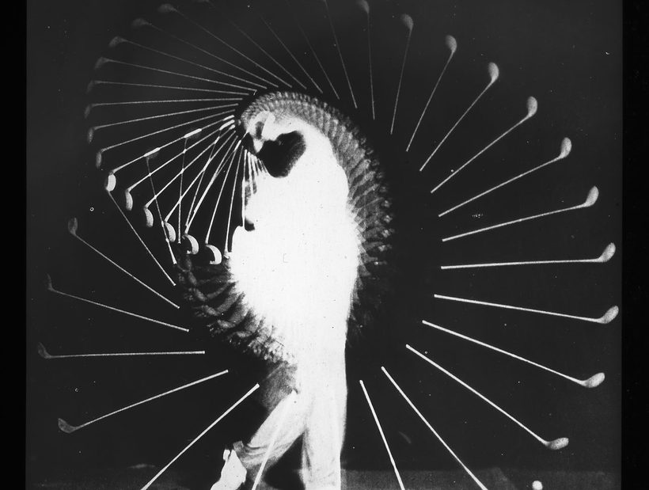
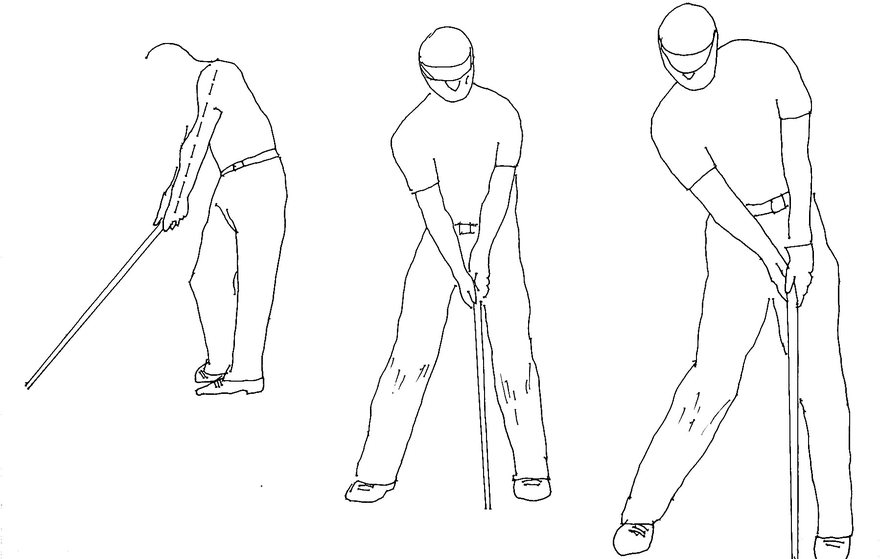
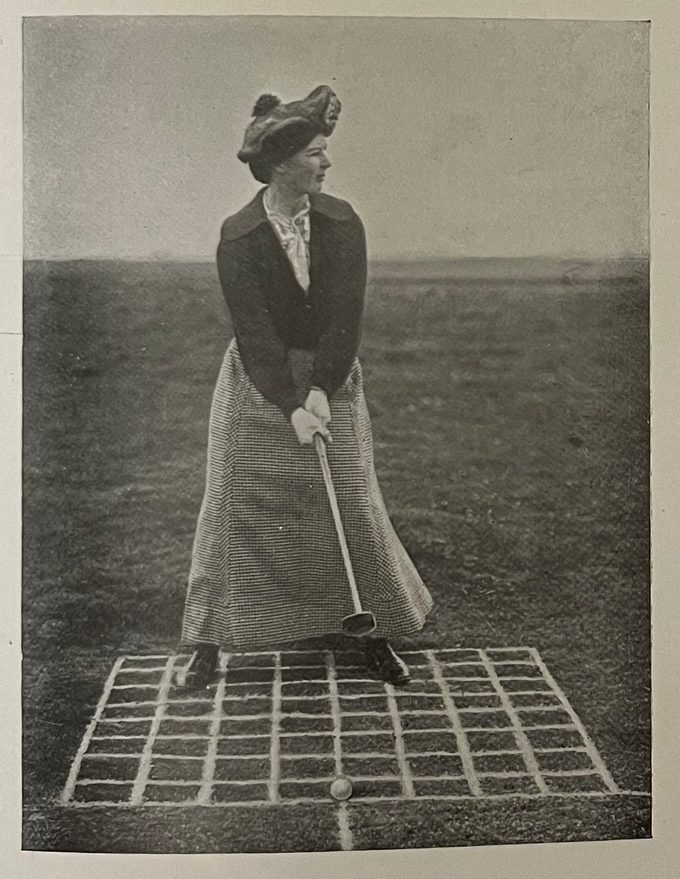
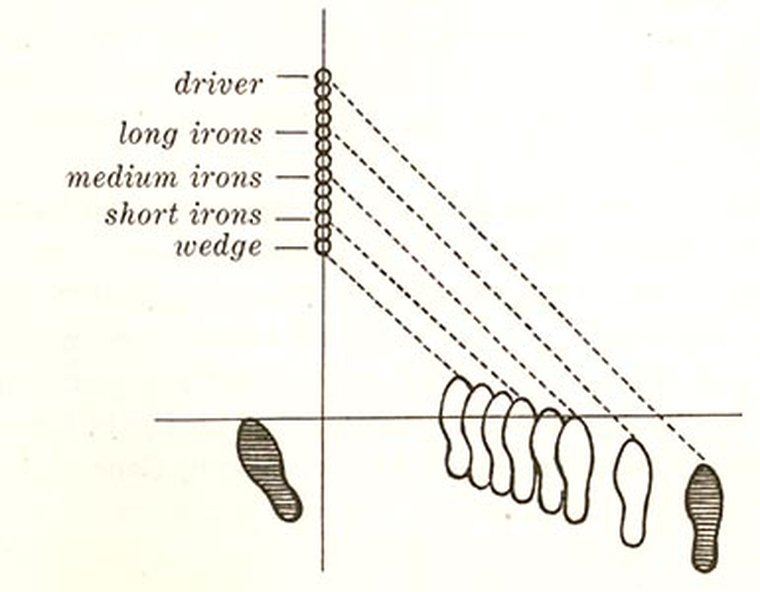
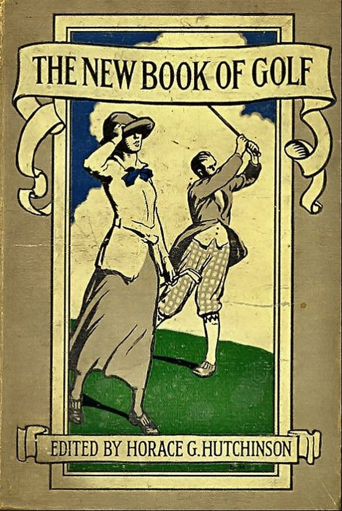

골프만큼 방법론이 분분한 운동도 드뭅니다. 유튜브를 열면 서로 다른 말을 하는 레슨이 수천 개입니다. 누구는 이렇게 하라 하고, 누구는 저렇게 하라 하죠. 다 맞는 말 같은데 따라하면 내 스윙은 오히려 꼬입니다.
그래서 오늘은 세부 기술이 아닌, 시대가 바뀌어도 변하지 않는 골프의 원칙에 대해 이야기해봅니다. 기술은 사람마다 다르지만, 원칙은 결국 통하니까요.
1골프는 힘 빼는 운동입니다

초보가 가장 흔히 하는 실수는 공을 되도록 세게 치려는 것입니다. 하지만 골프는 힘의 운동이 아니라 타이밍과 리듬의 운동입니다. 아이러니하게도, 힘을 뺀 스윙이 공을 더 멀리 보냅니다. 프로 선수들의 스윙이 하나같이 부드러운 이유죠.
2머리는 가만히
'헤드 업(head up)'은 골프의 고전적 실수입니다. 공이 날아가는 걸 먼저 보고 싶어 임팩트 전에 고개를 드는 순간, 상체가 들리면서 클럽이 공을 제대로 맞히지 못합니다. 임팩트 순간까지 공을 보는 것 — 골프의 가장 오래된 격언입니다.
3스윙의 주인은 하체입니다

초보는 팔로 치려 하고, 고수는 하체로 칩니다. 좋은 스윙은 발·골반·하체의 회전에서 나오는 힘이 상체와 클럽으로 전달되는 순서를 따릅니다. 이를 '키네틱 체인(운동 사슬)'이라 부릅니다. 팔만 휘두르는 스윙은 힘도 없고 일관성도 없습니다.
4템포가 거리보다 먼저입니다
아마추어는 백스윙을 빨리 올렸다 급히 내리치려 합니다. 하지만 좋은 스윙은 백스윙과 다운스윙의 리듬 비율이 일정합니다. 흔히 3 대 1의 템포가 이상적이라고도 하죠. 서두르지 않는 것, 그것이 오히려 거리를 만듭니다.
5그립과 셋업이 절반입니다

명스윙은 스윙이 시작되기 전에 이미 결정됩니다. 그립, 스탠스, 자세, 정렬 — 이 셋업이 틀어지면 아무리 좋은 스윙을 해도 공은 엉뚱한 곳으로 갑니다. 프로들이 매번 루틴처럼 점검하는 게 바로 이 셋업입니다.

6자기 스윙을 아는 것이 가장 중요합니다
이게 어쩌면 골프의 최고 원칙입니다. 남의 스윙을 따라하기 전에, 내 스윙이 지금 어떤 상태인지를 아는 것이 먼저입니다. 내 템포가 빠른지 느린지, 백스윙이 긴지 짧은지, 체중이동이 잘 되는지를 모르면 어떤 조언도 내 것이 되지 못합니다. 골프는 결국 자기 자신을 아는 운동입니다.
마치며

기술은 유행을 타지만 원칙은 변하지 않습니다. 힘을 빼고, 머리를 두고, 하체로 치고, 템포를 지키고, 셋업을 갖추고, 그리고 무엇보다 내 스윙을 아는 것. 이 여섯 가지는 100년 전 교본에도, 오늘의 유튜브 레슨에도 똑같이 흐르고 있습니다.